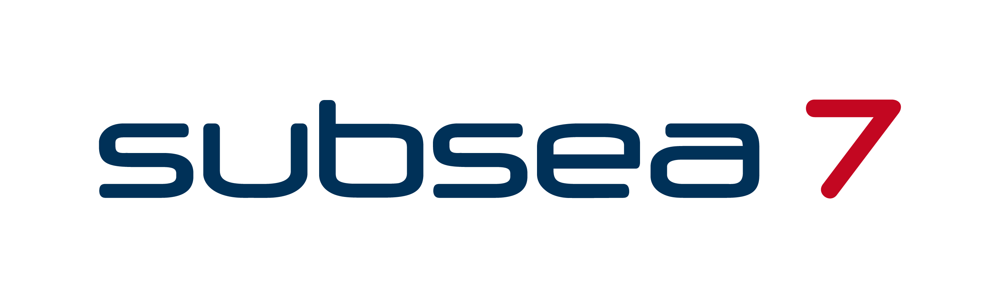

Do you want to join the team who makes energy transition possible?
16.09.2023
Stavanger
Graduate
If you are passionate about making a positive impact on securing the world's energy future, we invite you to join Subsea7’s industry-leading Graduate Engineer Development Scheme (GEDS) and contribute to our mission of shaping a sustainable tomorrow.
The Graduate Engineer Development Scheme
The Graduate Development Scheme allows the graduates to gain a variety of experiences, which include formal training sessions and on-the-job development, spanning from detailed design engineering to opportunities to work offshore.
Subsea7 provides an environment that promotes and supports the development of both business skills and technical knowledge, which enables our graduates to work effectively within our global organization.
As a graduate, you will become a valuable member of the team and collaborate across disciplines.
Our commitment to you:
To create a more sustainable future, we need smart minds who can contribute to solving both these challenges!
23.09.2023
Stavanger
Graduate
We are one of the leading oil and gas companies in Norway founded on more than 50 years of operations on the NCS. The world today is dependent on secure and stable access to energy, at the same time as the climate crisis needs solving. We will reduce our environmental impact, while at the same time supplying Europe with energy for a long time ahead. To create a more sustainable future, we need smart minds who can contribute to solving both these challenges.
We are skilled and engaged employees, working on platforms and in our offices in Hammerfest, Oslo and Stavanger. Everyone has important jobs with meaning. Vår Energi is moving at a full speed into the future, and we need young people with new impulses to face tomorrow’s challenges. Is that you?
What to expect as a graduate within Structural & Marine Engineering?
As a graduate, you will be enrolled in Vår Energi’s graduate program and work with task such as:
Start your career with DNV and have a meaningful job with one of Norway’s most attractive employers
01.10.2023
Oslo
Graduate
Are you fresh out of university, or soon to complete your degree?
Our success relies heavily on the young, curious, and diverse people who join us every year, and we reward their choice with some of the very best training in our industries.
As a competence-based company, we are always interested in attracting top talent to our ranks. As a young employee you are offered a broad range of in-house and external training and development programmes, including mentoring from experts in their fields.
What we are looking for
We look for individuals with a strong desire for a career within DNV. You should be proactive, curious and eager to learn, have an open mind and keen interest in problem solving. In addition having an open, positive attitude and working as a team player is vital. We encourage you to play an active part in your personal and career development and take on new challenges and positions when you are ready.
Opportunities for learning
In addition to participating in our formal training programs, you will work with experts on exciting projects that aim to solve customer and industry challenges around the world. The annual Next Generation DNV Summit brings together young employees from around the world, connecting with their peers and top management while pitching ideas for new business.
We offer a wide range of exciting trainee programmes
01.10.2023
Oslo
Trainee
We offer a wide range of exciting trainee programmes
Our ambition is to attract, retain, and challenge our employees in order to maintain and develop our strong technical and commercial position.
One way to do this is through a trainee programme. Our philosophy is to recruit and train candidates in their field of expertise. As a young professional in DNV, you are part of strengthening DNV’s global network.
And remember; as a trainee in DNV you are permanently hired and will have the same opportunity for development, career move and network building as other permanent employees.
Every summer DNV offers students a chance to be part of our exciting summer project at the Høvik campus. Perhaps participating in a summer project can be your starting point in DNV? Are you comfortable with complex problem solving, critical thinking and powered with creativity? This could be the opportunity you are looking for!
08.10.2023
Oslo
Summer Project
DNV puts a lot of effort and expertise into selecting an interesting topic that covers a broad scope of study areas for our annual summer project. This work is done by our own knowledgeable engineers and risk consultants.
The topic for 2024 has been decided;
How can seagrass protect underwater structures?
The industry is putting tons of crushed rock offshore every year to protect cables, structures and foundations from sediment transportation and scour. Examples are fixed and floating wind turbines, pipelines, artificial islands etc. Transportation costs are huge and so is also the CO2 footprint. An alternative solution for scour protection currently used in the market is frond mats consisting of plastic.
We would like the project team to design a new, environment-friendly concept for scour protection by use of e.g. seagrass or a product that is natural.
The concept should also look into how new digital solutions can increase predictability for the underwater structures by using predictable models combined with sensors.
Finally, the concept needs a proper business case to ensure that it can be realized. This would be including efficiencies relating to surveys and inspections, as well as more accurate lifetime assessments.
This is a highly multidisciplinary task and the topic is of high relevance both to DNV and the industry. Like previous years, we will be looking for curious students who like complex problem solving, critical thinking and are powered with creativity.
Your background and passion will typically be within hydrodynamics, geotechnics, marine biology, marine operations, environmental engineering, data science, IT or business/economics. Of course, if you are a person people find it fun to work with, we would like to read your application!
If you want to take part in this exciting journey, this is your chance to develop and learn more about DNV and our services.
Real challenge – real learning
The summer project is organized during the summer months for students in their fourth year of a master’s degree programme. Each year we take on a number of students with varied cultural and academic backgrounds who will work intensively on the project for six weeks. The outcome of the project is a product developed by challenging each other’s ideas and building on each other’s strengths.
The students from previous years agreed that the weeks at the head office have given them an amazing summer and an unforgettable time.
They express gratitude towards DNV colleagues and external experts that enabled the realization of the project through always being available, positive and supportive.
The project starts with team building and technical presentations, as well as training in presentation skills. After six weeks working on the project, the team presents the result to the top management and colleagues at the office at Høvik (outside Oslo).
We offers students relevant work experience through short term employment opportunities in exciting and challenging work environments
08.10.2023
Oslo
Summer Project
As a summer student, you will collaborate with a diverse team and work on specific tasks guided by our experienced technical experts. You take part in teams working with products and solutions, giving you the chance to have an impact on what we deliver to our customers. Our previous summer students have found our summer jobs to be an excellent opportunity to immerse themselves in the DNV work culture, while gaining valuable real-world experience.

Har du lyst til å bidra i varierte og spennende prosjekter sammen med kompetente kolleger i et godt sosialt og faglig miljø?
31.10.2023
Stavanger/Oslo
Sommerstudent
Vi søker sommerstudent for sommeren 2024
Vi søker en sommerstudent som ønsker å videreutvikle seg innenfor ulike typer arbeid innen hydrodynamikk, marine operasjoner og/eller struktur.
Gjennom en sommerjobb hos Global Maritime får du innblikk i og muligheten til å aktivt delta i et eller flere av våre pågående prosjekter.
Ønskede kvalifikasjoner og egenskaper:
Vi er på jakt etter flere ingeniører i vårt Engineering & Execution (E&E) team!
31.10.2023
Stavanger/Oslo/Bergen
Nyutdannet ingeniør
Er du vår nye kollega?
Vi er på jakt etter flere ingeniører i vårt Engineering & Execution (E&E) team!
Synes du det høres spennende ut å kunne jobbe med utvikling av konsepter innen akvakultur, eller installasjon av flytende vindmøller?
Liker du tanken på å kunne jobbe med komplekse OrcaFlex-analyser og samtidig ha muligheten til å komme deg ut av kontoret og se teori i praksis?
Liker du å jobbe selvstendig med dypdykk i FEM-teori og software? Eller trives du best i team med varierte prosjektoppgaver?
Trigges du av tanken på å tenke ut smarte løsninger på praktiske utfordringer på dekket til et ankerhåndteringsfartøy?
Hvis noe av dette høres interessant ut kan Global Maritime være noe for deg.
I Engineering & Execution-avdelingen driver vi nemlig med alt fra design og analyse av flytende strukturer til planlegging og utførelse av marine operasjoner. Ved å bli en del av vårt team får du en unik mulighet til å kunne jobbe både med avanserte analyser, og være med ut på site eller offshore der det skjer.
Hvem ser vi etter?
E&E-avdelingen vår trenger flere ingeniører både i Stavanger, Oslo og Bergen. Avdelingen består av rundt 50 ingeniører med bakgrunn innen hydrostatikk og -dynamikk, strukturanalyse og marine operasjoner. Vi ser nå etter nyutdannede ingeniører. Hvis du er nysgjerrig, har en ekte interesse for ingeniørfaget og samtidig kan krysse av noen av punktene under passer du godt inn på laget vårt!

Western Bulk is seeking curious and highly dedicated trainees for Chartering roles in our Commercial Teams
21.10.2023
Oslo
Chartering Trainees
Western Bulk (WB) is an asset-light dry bulk operator and freight trader, operating a fleet of about 100 -150 Panamax, Supramax and Handysize vessels. The company combines highly commercial trading skills with technology, advanced analytics and risk management to succeed in an extremely competitive and global shipping market.
WB seeks to offer flexible, high-quality ocean freight services to its customers, leveraging on its global trading pattern, relationships and operational expertise. Through its constant presence in the various regional and local freight markets, WB gains valuable market intelligence that it uses to take positions in the market – trying to identify and benefit from short term price variations, trend breaks and arbitrage opportunities. Moreover, value is created by constantly seeking to optimise the scheduling of vessels and cargoes, reducing ballast time and finding ways to operate voyages as efficiently as possible.
Each of WB's nine Commercial Teams operate as decentralized profit centres, using ships, cargoes and derivatives for directional play and arbitrage in the market. Risk management is a central part of WB's trading model, and the company also invests heavily in the use of technology and advanced analytics for decision support and market forecasting.
Western Bulk is headquartered in Oslo, and has offices in Singapore, Dubai, Seattle, Santiago, Casablanca and Copenhagen.
Chartering Trainees
Western Bulk is seeking curious and highly dedicated trainees for Chartering roles in our Commercial Teams.
In addition to seeking candidates who are graduates from Bachelor’s degree or higher level of education, we also seek candidates with a proven track record within sales or trading that would like to work within dry bulk shipping.
Trainees in Western Bulk are given challenges and responsibilities from day one. The trainees will start out in one of our nine Commercial Teams learning vessel operations, and after about one year, trainees start to specialise in chartering.
The Chartering role will involve the following responsibilities:

This is your opportunity to get hands-on experience in one of the world’s leading maritime organisations
29.10.2023
Oslo
Digital Summer Intern
About BW LNG
BW LNG is a leading developer, owner and operator of floating gas infrastructure solutions. Our Shipping unit brings LNG to where it is needed, and our Gas Solutions unit develops, owns and operates floating gas infrastructure.
A global company with over four decades of experience in gas solutions, with more than 30 LNG carriers and Floating Storage and Regasification Units, we strive to be a long-term partner for sustainable growth and competitive solutions towards a low-carbon society. BW LNG has offices in Oslo, Singapore, Houston, Rio, Beijing, Mumbai, and Manila.
BW LNG is an affiliate of BW Group, a leading global maritime company involved in shipping, floating infrastructure, deepwater oil & gas production, and new sustainable technologies. Founded in 1955 by Sir YK Pao, BW controls a fleet of over 490 vessels transporting oil, gas and dry commodities, with its 200 LNG and LPG ships constituting the largest gas fleet in the world. In the renewables space, the group has investments in solar, wind, batteries, biofuels and water treatment.
Are you ready to make an impact?
What drives us is our mission to deliver energy for the world today, and to find solutions for tomorrow. If you want to make lives better around the world by providing access to energy, while working on sustainability and decarbonisation, we’d like to hear from you. Working at BW you will feel the pulse of the world each day. If something happens in the world, we feel it, and you can play your part by anticipating and responding to it. Our high-performing teams are drawn to BW by the global nature of our work and the satisfaction of working with collaborative people who inspire each other to deliver exceptional results.
JOIN US FOR THE FUTURE
We are currently seeking:
Digital Summer Intern
In order to support our vision to be Best on Water, BW LNG is looking for a highly motivated summer intern to work with our various in-house teams on digital initiatives. Actual tasks will depend on qualifications and departmental needs at the time.
This is your opportunity to get hands-on experience in one of the world’s leading maritime organisations.
Potential responsibilities:
This is your opportunity to get hands-on experience in one of the world’s leading maritime organisations
29.10.2023
Oslo
Technical Summer Intern
About BW LNG
BW LNG is a leading developer, owner and operator of floating gas infrastructure solutions. Our Shipping unit brings LNG to where it is needed, and our Gas Solutions unit develops, owns and operates floating gas infrastructure.
A global company with over four decades of experience in gas solutions, with more than 30 LNG carriers and Floating Storage and Regasification Units, we strive to be a long-term partner for sustainable growth and competitive solutions towards a low-carbon society. BW LNG has offices in Oslo, Singapore, Houston, Rio, Beijing, Mumbai, and Manila.
BW LNG is an affiliate of BW Group, a leading global maritime company involved in shipping, floating infrastructure, deepwater oil & gas production, and new sustainable technologies. Founded in 1955 by Sir YK Pao, BW controls a fleet of over 490 vessels transporting oil, gas and dry commodities, with its 200 LNG and LPG ships constituting the largest gas fleet in the world. In the renewables space, the group has investments in solar, wind, batteries, biofuels and water treatment.
Are you ready to make an impact?
What drives us is our mission to deliver energy for the world today, and to find solutions for tomorrow. If you want to make lives better around the world by providing access to energy, while working on sustainability and decarbonisation, we’d like to hear from you. Working at BW you will feel the pulse of the world each day. If something happens in the world, we feel it, and you can play your part by anticipating and responding to it. Our high-performing teams are drawn to BW by the global nature of our work and the satisfaction of working with collaborative people who inspire each other to deliver exceptional results.
JOIN US FOR THE FUTURE
We are currently seeking:
Technical Summer Intern
In order to support our vision to be Best on Water, BW is looking for a highly motivated summer intern to support our Technical team. BW LNG currently manages 23 LNG carries and 5 FSRUs from our Oslo office. Our Technical team consist of superintendents and technical support functions. Actual tasks will depend on qualifications and departmental needs at the time.
This is your opportunity to get hands-on experience in one of the world’s leading maritime organisations.
Potential Responsibilities:
To support Technical Superintendents with:
Vil du være med å løse framtidens utfordringer neste sommer? Nå kan du søke sommerjobb for 2024 i Multiconsult
16.10.2023
Hele landet
Sommerjobb
I Multiconsult har vi som mål å hele tiden gjøre samfunnet og omgivelsene våre bedre – og mer rustet for å løse fremtidens behov. Derfor utfordrer vi grensene for hva som er og bør være, gjennom å hele tiden finne bedre løsninger for samfunnet, både i dag og i morgen.
Måten vi løser dette på, er å tenke stort. Med en sommerjobb i Multiconsult får du også muligheten til akkurat det – lære av det som var, og utfordre det som er.
Hva kan du forvente av en sommerjobb eller et sommerprogram i Multiconsult?
Målet med våre sommerjobber er å gjøre deg som student best mulig rustet for arbeidslivet og spennende karrieremuligheter hos oss. For at du skal få et positivt og riktig bilde av hvordan det er å jobbe i Multiconsult, legger vi hvert år ned stor innsats i å tilby spennende, utfordrende og relevante oppgaver i våre sommerengasjement.
Sommerjobben i Multiconsult er en unik mulighet til å bli bedre kjent med Multiconsult som arbeidsgiver, og hverdagen som rådgivende ingeniør. Her får du muligheten til å ta del i pågående oppdrag og fagrelevante oppgaver som forbereder deg til arbeidslivet. Dette kan innebærer alt fra prosjektering, analyse, tegninger og beregninger til befaring på byggeplass og kundemøter. Felles for alle oppgaver er at du vil dra nytte av kunnskapen til våre erfarne medarbeidere, samtidig som du vil få muligheten til å komme med nye perspektiver og ideer.
Gjennom sommeren vil det også bli arrangert sosiale aktiviteter der du får muligheten til å bli bedre kjent med andre sommerstudenter og kollegaene i avdelingen du tilhører.
Hva forventer vi av deg som sommerstudent?
Vi forventer ikke at du skal kunne alt – vi er først og fremst opptatt av ditt potensiale. For at vi som selskap skal kunne utvikle oss er vi avhengig av nye perspektiver, derfor trenger vi deg som er faglig engasjert, nysgjerrig og som tør å utfordre etablerte standarder.
I Multiconsult verdsetter vi relasjonskompetanse på høyde med faglig kompetanse og tror at fremtidens rådgiver er like dyktig på kommunikasjon og samarbeid som på fag.
Hvem kan søke på sommerjobb i Multiconsult?
Vi søker etter deg som er under utdanning på fagskole, høyskole eller universitet, både bachelor- og masterstudenter er av interesse. Du studerer innenfor et fagområde som er relevant for sommerjobben du søker på, og kunne tenke deg en karriere innenfor rådgiverbransjen.
Vi søker fortrinnsvis etter deg som skal starte på ditt siste år av utdanningen.

The energy transition is an incredible journey. We are looking for students with the drive and passion to make the journey possible
20.10.2023
Stavanger
Intern
This is a great opportunity to come and work with us; learn about what we do and what it means to work for Subsea7.
You will follow an engineer’s daily work where you will be assigned with both interesting and challenging work tasks.
We will give you the chance to network with experts and to develop your technical and non-technical skills.
Minimum requirements:
3rd or 4th year student, typically in one of the following engineering disciplines:
Mechanical, Civil, Geotechnics, Structural, Marine/Naval Technology, Material Technology, Power distribution, Offshore Technology, Energy and Environmental Engineering or Applied Physics and Mathematics.
Good verbal and written English.
Work period:
Mid-June to mid/end of August. We will prioritize students that can work through the whole period.
Please upload temporary transcript or other document describing subjects and grades achieved to this point.